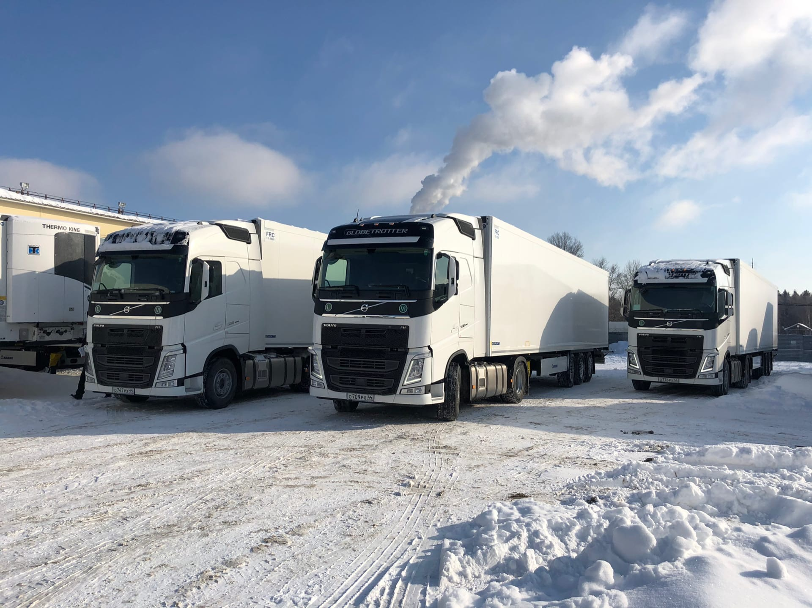
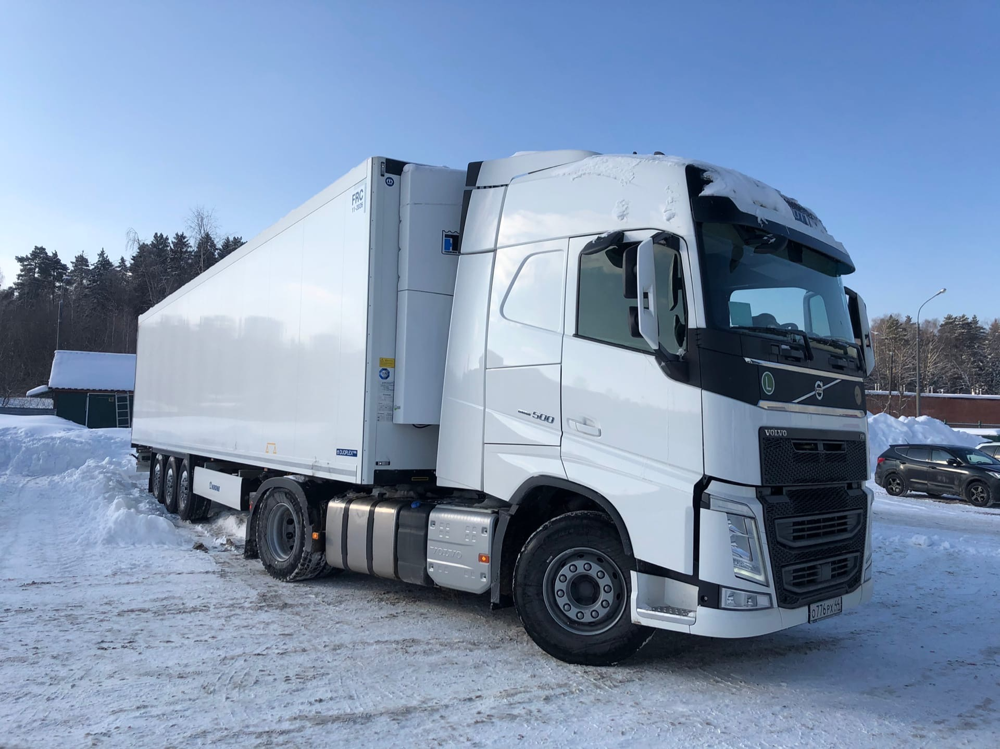
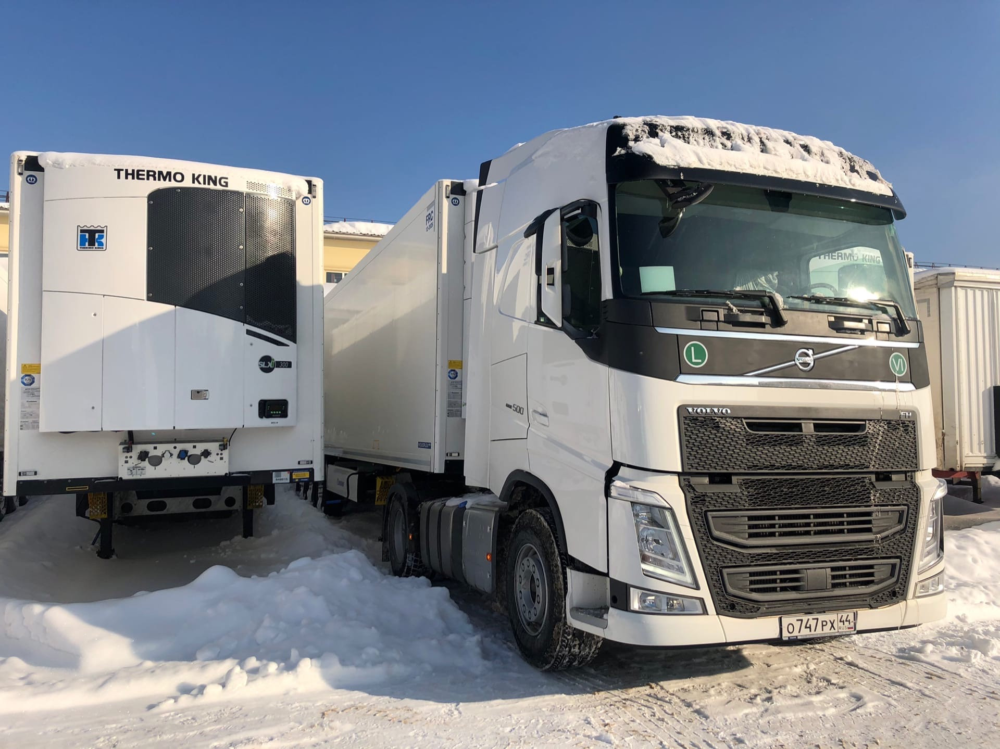
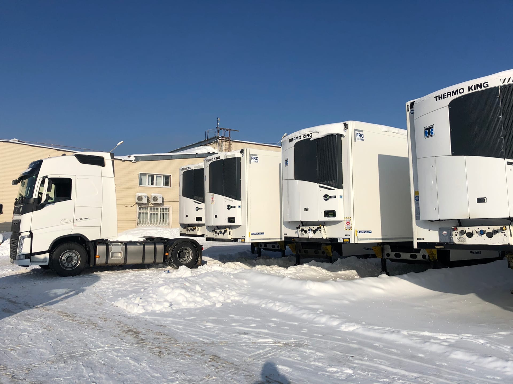
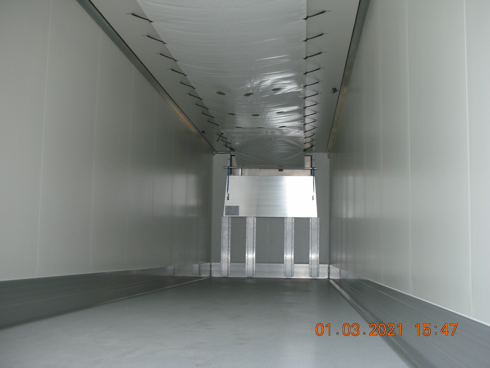
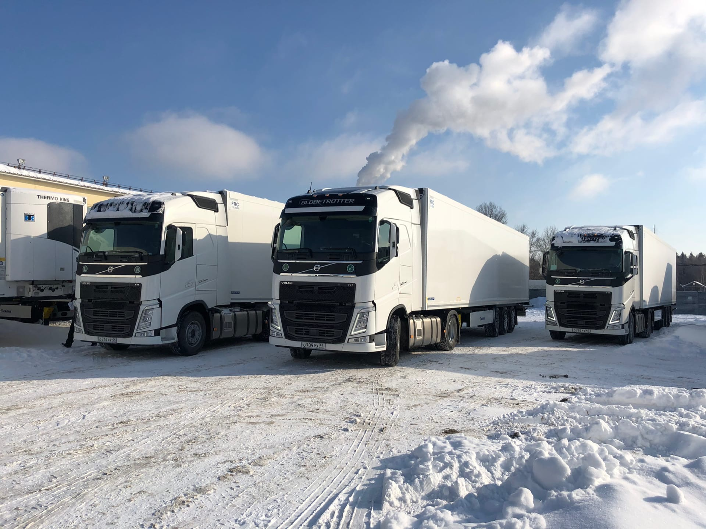
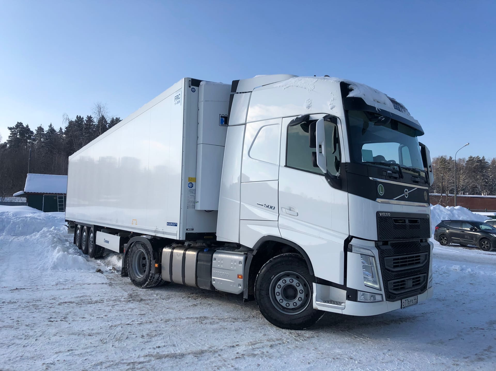
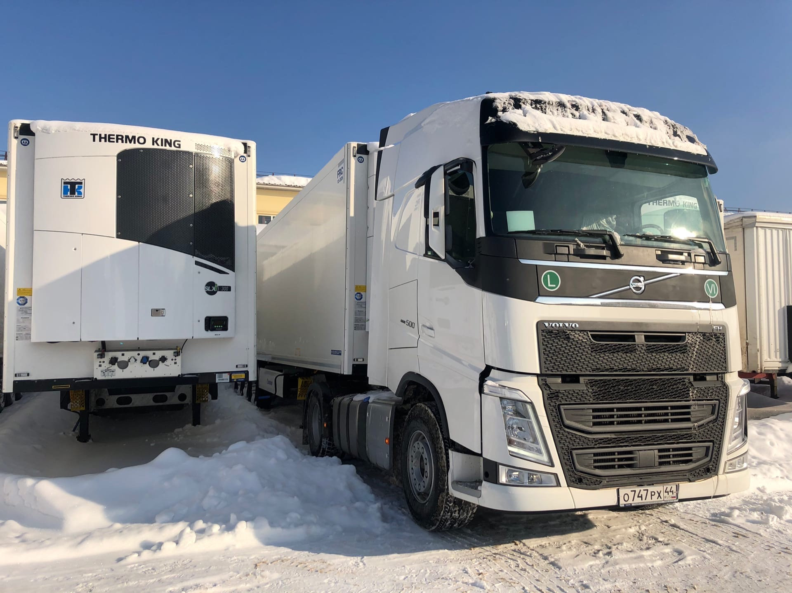
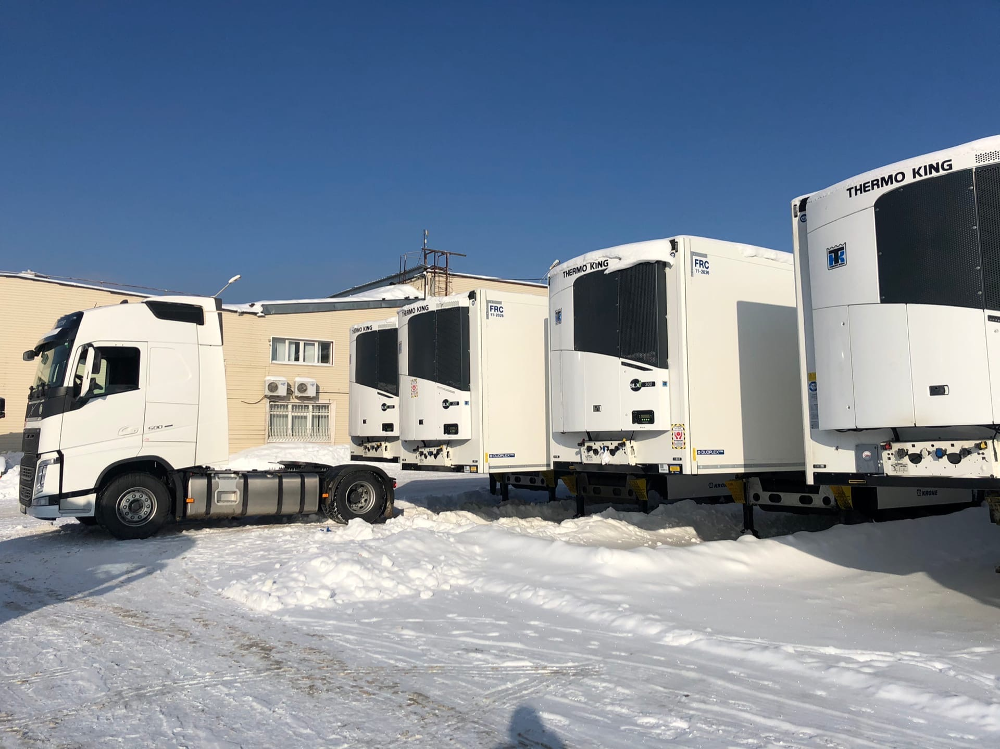
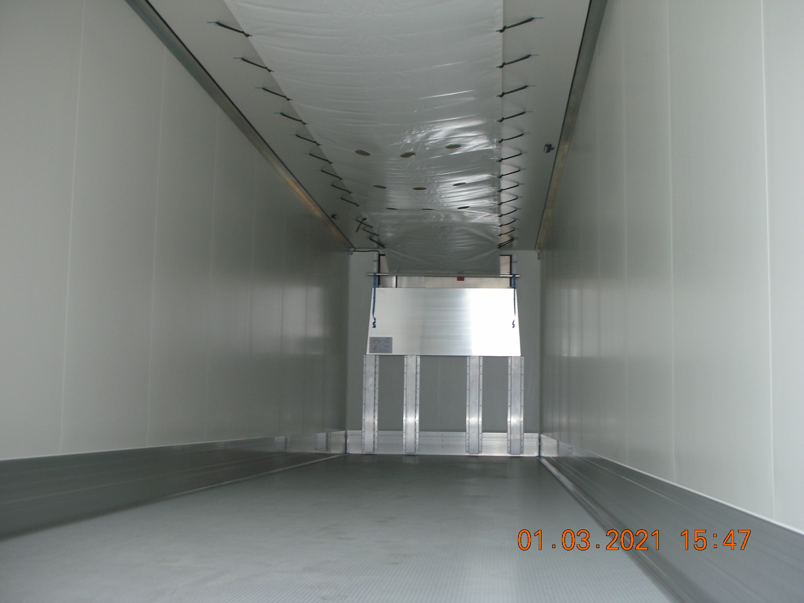

VOLVO FH-12 500 сил
 




В нашем автопарке имеется 5 магистральных тягачей Volvo FH-12 2020 года выпуска, работающих с прицепами-рефрижераторами Krone. Имеют экологический класс Euro 6.
Грузовики известны за свою надежность, повышенную безопасность и экономическую эффективность.
Мощность: 500 л.с
Крутящий момент: 3000 Нм
Объем двигателя: 12.8 л
Средний расход: 30 л/100 км
Год выпуска: 2020





В нашем автопарке имеется 5 магистральных тягачей Volvo FH-12 2020 года выпуска, работающих с прицепами-рефрижераторами Krone. Имеют экологический класс Euro 6.
Грузовики известны за свою надежность, повышенную безопасность и экономическую эффективность.
Мощность: 500 л.с
Крутящий момент: 3000 Нм
Объем двигателя: 12.8 л
Средний расход: 30 л/100 км
Год выпуска: 2020
Характеристики прицепа-рефрижератора
Модель: Krone Cool Liner
Год выпуска: 2020
Холодильная установка: THERMO KING SLXi 300
Максимальный вес, с грузом: 39 000 кг
Длина: 13.380 мм
Ширина: 2.470 мм
Высота 2.650 мм
Объем: 86 м3
Вместимость: 36 европалет